protocell
Act IStop 1 · 4.1 GaEP01a
Vent protocell
Iron-sulfur micropore · pores ~1–100 µm
A mineral wall with a battery across it. Warm vent fluid meets acid ocean, and chemistry starts keeping score.
Every stop on the Journey pairs an openly licensed photograph or reconstruction (left) with a custom natural-history vector glyph in a unified two-weight stroke style (right). Full licence & attribution register →
A mineral wall with a battery across it. Warm vent fluid meets acid ocean, and chemistry starts keeping score.
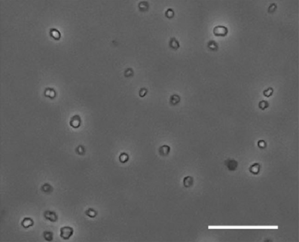

A cell compares now with four seconds ago and swims toward food. Earth's first working memory.

A protein clock ticks once a day. The planning horizon jumps from seconds to 24 hours.

Oxygen poisons the old world and the planet freezes.
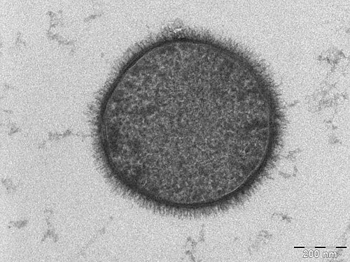
Breathing oxygen yields 15–18× more energy from each sugar.
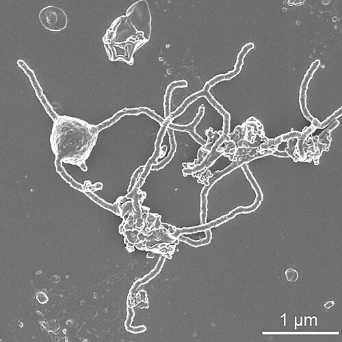
One cell swallows another and keeps it as a power plant.

An eyespot wired to two flagella steers toward light in milliseconds.


Synapse proteins show up long before any synapse.
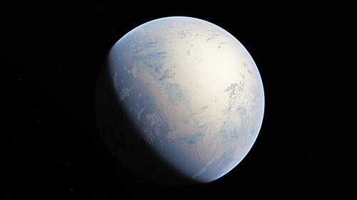
Ice from pole to equator for 55 million years. Living biomass falls 86%.
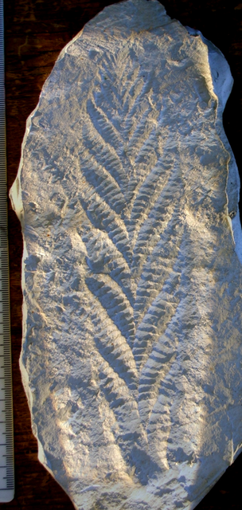
Bodies without nerves still coordinate, using peptides and voltage.


Neurons switch on. Planet-wide synaptic activity goes from zero to 10²⁰ events per second.

Steering: approach the good, avoid the bad, in three dimensions.

Eyes with 16,000 lenses start an arms race. Neural activity hits 800× its earlier level.
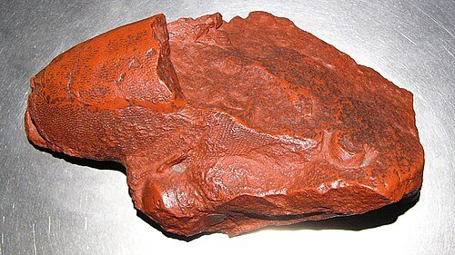
Dopamine teaches by surprise. Brains learn from reward.
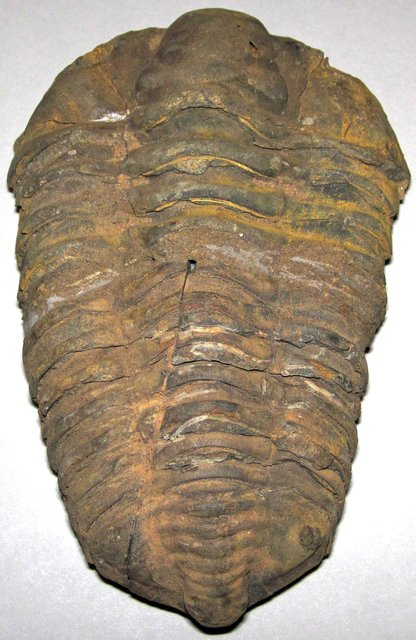
Ice returns. Most sea species die and neural activity falls 90%.
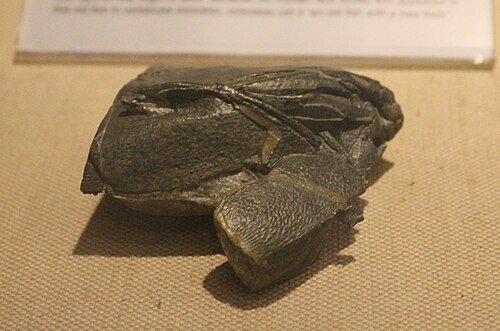
Myelin insulates nerves: 50× faster signals for a hundredth of the energy.

Plants climb onto land and start piling up wood, a huge carbon store with almost no living cells.
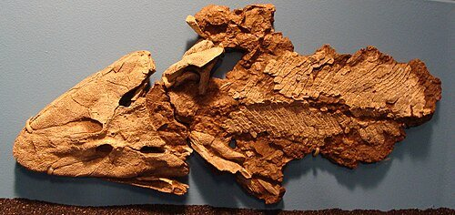
Eyes leave the water. Visible space grows a millionfold, and planning starts to pay.
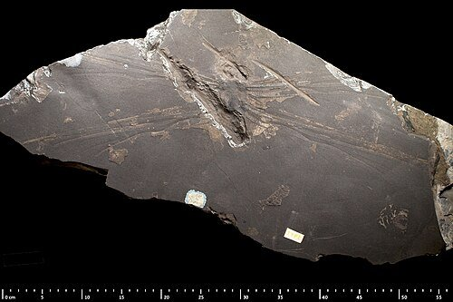
Oxygen near 33% powers giant insects over the coal forests.
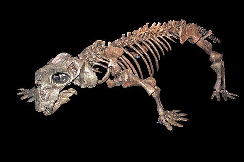
Super-volcanoes erupt. Biomass falls 76% and neural activity 94%.

Warm blood and a layered cortex let small animals hunt at night and replay their routes.

Old jaw bones become a three-bone middle ear for high-pitched hearing.

Flight needs a fast 3D controller, so the brain's balance centers grow.

Ant and bee colonies act as superorganisms. Neural activity peaks at 2×10²⁶ events per second.

Impact winter. Neural activity falls 92.5% and the big dinosaurs are gone.
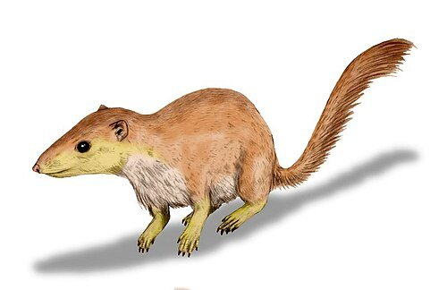

Small warm-blooded survivors inherit an emptied world.

Whales see with sound; songbirds pack 240 million neurons into each gram of brain.
Reading minds: a prefrontal cortex that models what others know.

A struck stone keeps a plan for 10,000 years at zero watts. Memory leaves the body.
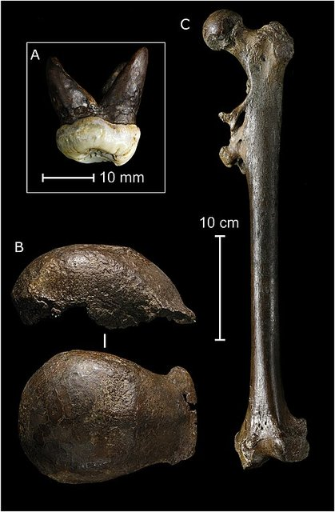
Cooking digests food outside the body and frees energy for a bigger brain.

Language at ~39 bits per second, cave art and tally bones.

Baked clay keeps records for thousands of years without power.
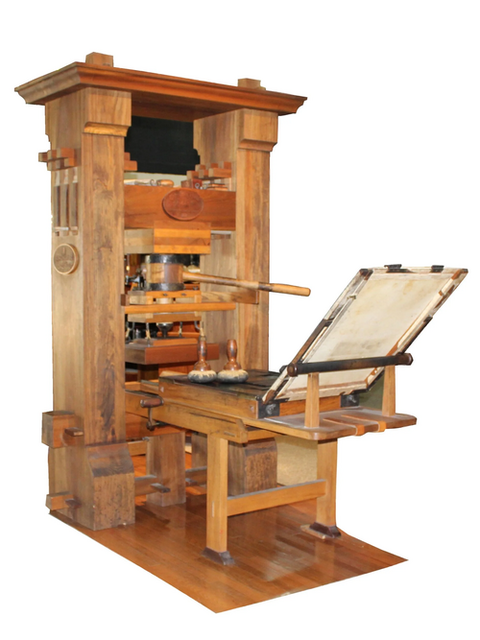
Copying cost falls 300× and science becomes shared memory.

Signals cross continents two million times faster than a nerve.

Computing goes electronic and software becomes data.


Graphics chips get repurposed to learn.

One machine runs 3×10²⁰ operations per second. All silicon together is still 0.006% of animal brain activity, and the typical cell is still a bacterium.